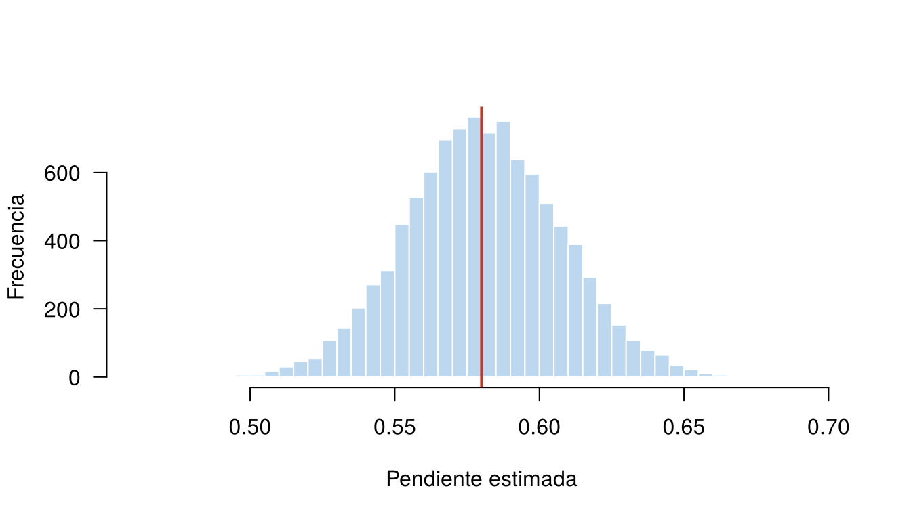
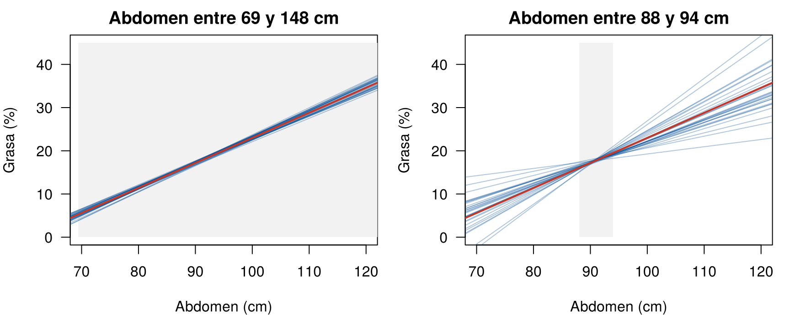
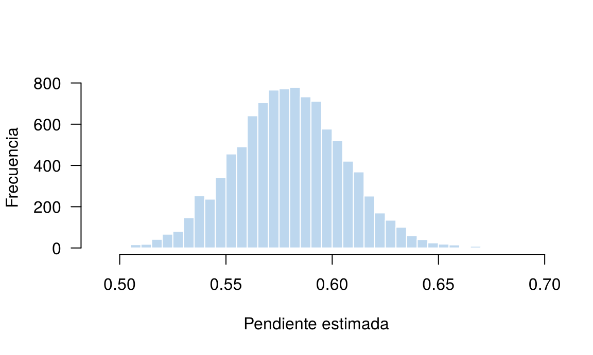

Si se midiera otra muestra de 252 hombres, la recta estimada sería un poco distinta. Los estimadores \(\hat{\beta}_0\) y \(\hat{\beta}_1\) son variables aleatorias: cambian de una muestra a otra, como la media muestral en la Unidad 2.
Esta página muestra, con simulación, cómo es su distribución muestral: dónde se centran (insesgadez), cuánto varían (error estándar) y de qué depende esa variación. Termina con el teorema de Gauss-Markov, que explica por qué se usa mínimos cuadrados. Los bloques de código se ejecutan en orden.
Para verla hay que conocer los parámetros de la población, y en la práctica no se conocen. Con simulación se pueden fijar: se supone que la población real es
\[ \text{grasa} = -35 + 0.58 \times \text{abdomen} + \varepsilon, \qquad \varepsilon \sim N(0, 4.5^2), \]
con valores parecidos a los estimados. Se dejan fijos los 252 abdómenes de los datos, se generan 10 000 muestras de grasa con ese modelo y en cada una se estima la recta.
Los datos se descargan aquí:
grasa.csv. Guarde el archivo en la
carpeta data de su proyecto de
RStudio.
grasa <- read.csv("data/grasa.csv")
x <- grasa$abdomen
n <- length(x)
beta0 <- -35; beta1 <- 0.58; sigma <- 4.5
set.seed(2026)
estimaciones <- replicate(10000, {
y <- beta0 + beta1 * x + rnorm(n, 0, sigma)
coef(lm(y ~ x))
})
dim(estimaciones)[1] 2 10000rowMeans(estimaciones)(Intercept) x
-35.0542250 0.5806138 El promedio de las 10 000 pendientes es casi exactamente 0.58, el valor verdadero, y el de los interceptos es casi −35.
hist(estimaciones[2, ], breaks = 40, col = "#BDD7EE", border = "white", las = 1,
main = "", xlab = "Pendiente estimada", ylab = "Frecuencia", xlim = c(0.46, 0.70))
abline(v = beta1, col = "#C0392B", lwd = 2)
Distribución de la pendiente estimada en 10 000 muestras simuladas. La línea roja es el valor verdadero.
Sí. Si el modelo es correcto (la media de \(y\) es una recta y los errores tienen media cero), los estimadores de mínimos cuadrados son insesgados:
\[ E(\hat{\beta}_0) = \beta_0, \qquad E(\hat{\beta}_1) = \beta_1 \]
Como en la Unidad 2, insesgado no quiere decir que acierte en cada muestra: quiere decir que, en promedio sobre muchas muestras, acierta. La simulación lo confirma.
Para la insesgadez no se necesita que la varianza sea constante ni que los errores sean normales. Basta que el modelo para la media sea correcto. Si la relación real es curva y se ajusta una recta, los estimadores sí quedan sesgados.
Las varianzas de los estimadores son:
\[ \text{Var}(\hat{\beta}_1) = \frac{\sigma^2}{S_{xx}}, \qquad \text{Var}(\hat{\beta}_0) = \sigma^2 \left( \frac{1}{n} + \frac{\bar{x}^2}{S_{xx}} \right), \qquad S_{xx} = \sum (x_i - \bar{x})^2 \]
Se cumplen si los errores tienen varianza constante \(\sigma^2\) y son independientes. La raíz de la varianza es el error estándar. Con la simulación se puede comprobar:
Sxx <- sum((x - mean(x))^2)
c(teorico = sqrt(sigma^2 / Sxx), simulado = sd(estimaciones[2, ])) teorico simulado
0.02634104 0.02653383 Con datos reales, \(\sigma^2\) no se
conoce y se reemplaza por \(\hat{\sigma}^2\). Eso da el error
estándar estimado, que es la columna Std. Error de
summary():
modelo <- lm(grasa ~ abdomen, data = grasa)
sqrt(sigma(modelo)^2 / Sxx)[1] 0.02642528summary(modelo)$coefficients[, "Std. Error"](Intercept) abdomen
2.46229413 0.02642528 La fórmula \(\text{Var}(\hat{\beta}_1) = \sigma^2 / S_{xx}\) dice que la pendiente se estima con más precisión cuando:
| Factor | Efecto | Por qué |
|---|---|---|
| \(\sigma\) es pequeño | Menor varianza | Los puntos están más cerca de la recta |
| \(n\) es grande | Menor varianza | \(S_{xx}\) suma más términos |
| Los \(x\) están dispersos | Menor varianza | \(S_{xx}\) es mayor; la recta se apoya en puntos alejados |
El tercer factor es el menos intuitivo. Si solo se midieran hombres con abdomen entre 88 y 94 cm, la pendiente sería mucho más incierta, aunque se midieran los mismos 252:
set.seed(2026)
x_angosto <- runif(n, 88, 94)
pend_angosto <- replicate(10000, {
y <- beta0 + beta1 * x_angosto + rnorm(n, 0, sigma)
coef(lm(y ~ x_angosto))[2]
})
c(rango_completo = sd(estimaciones[2, ]), rango_angosto = sd(pend_angosto))rango_completo rango_angosto
0.02653383 0.15798711 set.seed(2026)
par(mfrow = c(1, 2), mar = c(4, 4, 2, 1))
for (caso in 1:2) {
xs <- if (caso == 1) x else x_angosto
plot(NULL, xlim = c(70, 120), ylim = c(0, 45), las = 1,
xlab = "Abdomen (cm)", ylab = "Grasa (%)",
main = ifelse(caso == 1, "Abdomen entre 69 y 148 cm", "Abdomen entre 88 y 94 cm"))
rect(min(xs), 0, max(xs), 45, col = "#F2F2F2", border = NA)
for (k in 1:30) {
y <- beta0 + beta1 * xs + rnorm(n, 0, sigma)
abline(lm(y ~ xs), col = "#034A9450")
}
abline(beta0, beta1, col = "#C0392B", lwd = 2)
}
Rectas estimadas en 30 muestras con x dispersos (izquierda) y con x en un rango angosto (derecha).
Esto tiene una consecuencia práctica: al diseñar un estudio, conviene que la variable explicativa cubra un rango amplio.
Hay muchas formas de trazar una recta por una nube de puntos: minimizar los valores absolutos de los residuales, unir los puntos extremos, promediar pendientes entre pares de puntos. El teorema de Gauss-Markov dice que, si:
entonces, entre todos los estimadores lineales (que son sumas ponderadas de los \(y_i\)) e insesgados, los de mínimos cuadrados son los de menor varianza. Se dice que son los mejores estimadores lineales insesgados (MELI; en inglés, BLUE).
El teorema no exige normalidad. Sí exige varianza constante: cuando la varianza cambia con \(x\), hay estimadores mejores, como los de mínimos cuadrados ponderados (página Varianza no constante).
Si además los errores son normales, los estimadores tienen distribución normal:
\[ \hat{\beta}_1 \sim N\!\left(\beta_1, \; \frac{\sigma^2}{S_{xx}}\right) \]
Al reemplazar \(\sigma\) por \(\hat{\sigma}\), el cociente
\[ t = \frac{\hat{\beta}_1 - \beta_1}{\text{EE}(\hat{\beta}_1)} \]
sigue una distribución \(t\) con \(n - 2\) grados de libertad. Es la base de las pruebas y los intervalos de la página siguiente. Si los errores no son normales pero \(n\) es grande, la distribución \(t\) sigue siendo una buena aproximación, por el teorema del límite central.
| Problema | Causa | Solución |
|---|---|---|
| Creer que la heterocedasticidad sesga la pendiente | Se confunde sesgo con precisión | MCO sigue insesgado; lo que falla son los errores estándar |
| Creer que Gauss-Markov exige normalidad | Se mezclan dos resultados | Gauss-Markov exige media lineal, varianza constante y errores no correlacionados |
| Medir solo un rango angosto de \(x\) | Se ahorra en el diseño | La pendiente queda imprecisa; conviene cubrir un rango amplio |
Leer Std. Error como la desviación de los
datos |
Son cosas distintas | Es la variación del estimador de una muestra a otra |
Repita la simulación con \(\sigma = 9\) (el doble). ¿Qué pasa con el centro y con la desviación estándar de las pendientes?
set.seed(2026)
pend_ruido <- replicate(10000, {
y <- beta0 + beta1 * x + rnorm(n, 0, 9)
coef(lm(y ~ x))[2]
})
c(media = mean(pend_ruido), desv_est = sd(pend_ruido)) media desv_est
0.58122768 0.05306766 El centro sigue en 0.58: el estimador sigue insesgado. La desviación estándar se duplica, porque el error estándar es proporcional a \(\sigma\).
Repita la simulación con errores de una distribución exponencial
centrada, rexp(n, 1/4.5) - 4.5, que es muy asimétrica.
¿Siguen siendo insesgadas las pendientes? ¿Tiene forma de campana su
histograma?
set.seed(2026)
pend_exp <- replicate(10000, {
y <- beta0 + beta1 * x + rexp(n, 1 / 4.5) - 4.5
coef(lm(y ~ x))[2]
})
mean(pend_exp)[1] 0.5798967hist(pend_exp, breaks = 40, col = "#BDD7EE", border = "white", las = 1,
main = "", xlab = "Pendiente estimada", ylab = "Frecuencia")
Pendientes estimadas con errores exponenciales.
Sí: el promedio sigue cerca de 0.58 y el histograma tiene forma de campana. Con \(n = 252\), el teorema del límite central hace que la pendiente sea casi normal aunque los errores no lo sean.
Calcule el error estándar estimado del intercepto con la fórmula de
la página y compárelo con summary().
sqrt(sigma(modelo)^2 * (1 / n + mean(x)^2 / Sxx))[1] 2.462294summary(modelo)$coefficients[1, "Std. Error"][1] 2.462294Coinciden. El error estándar del intercepto es grande porque \(x = 0\) está muy lejos de los datos (\(\bar{x}^2\) es grande).
Última revisión: 9 de noviembre de 2026.